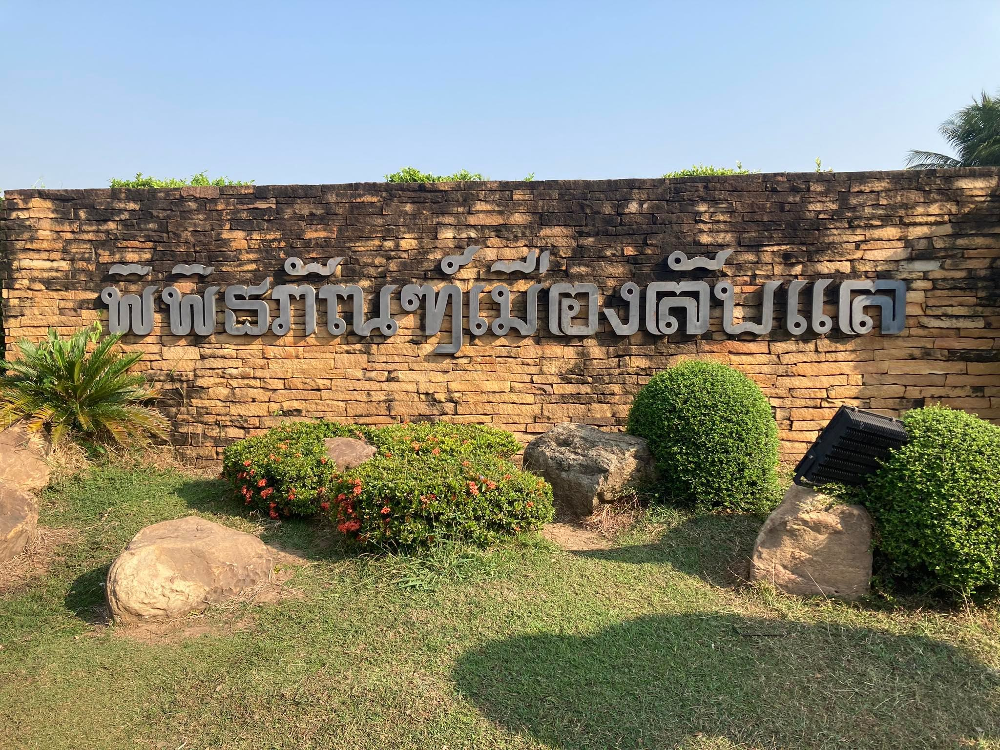
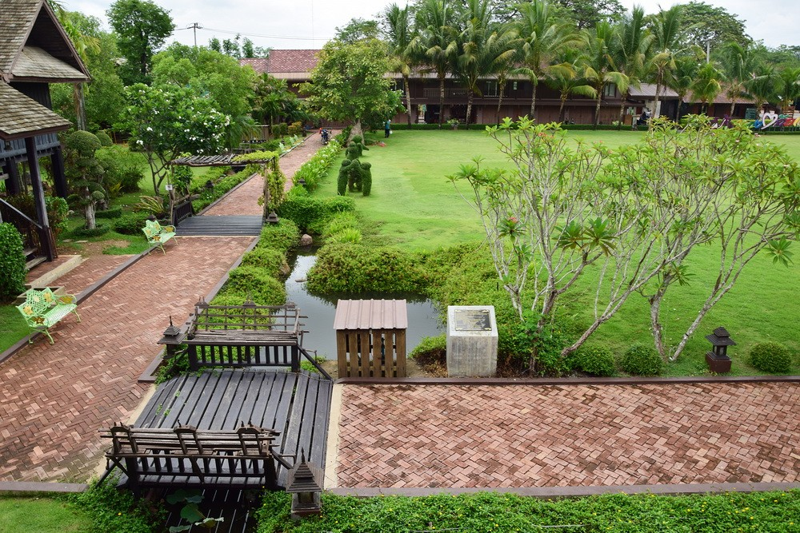
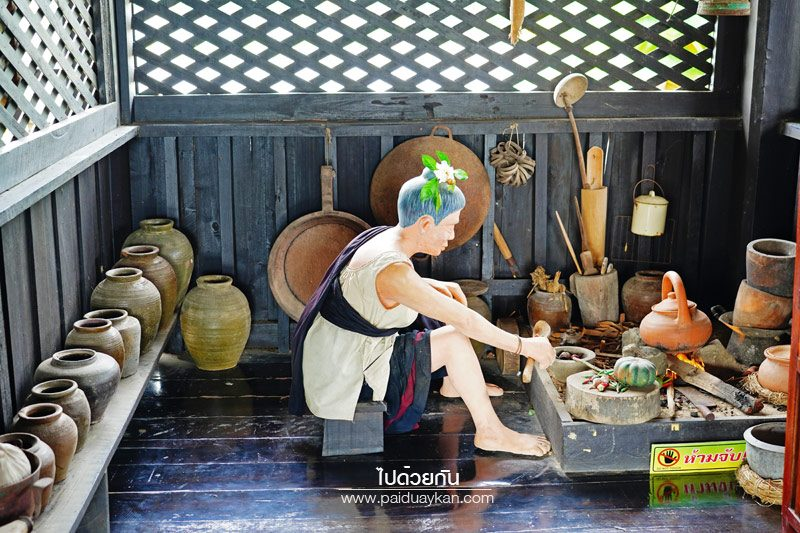
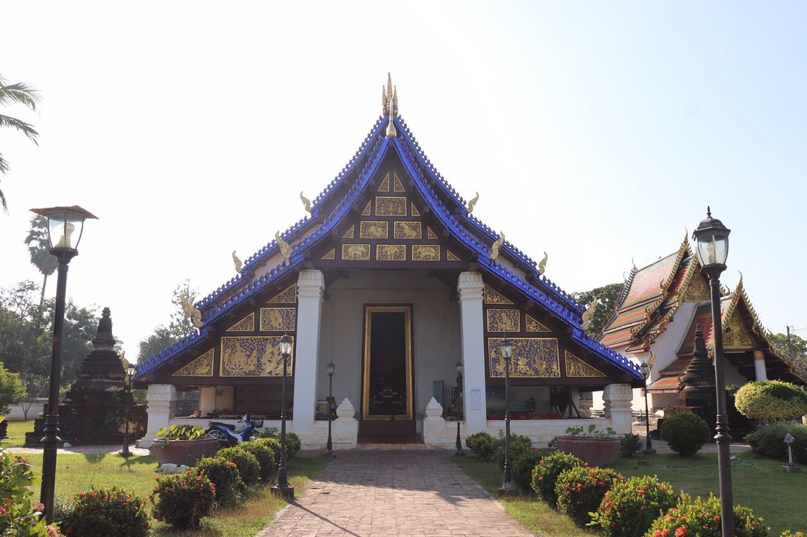

พิพิธภัณฑ์เมืองลับแล ตั้งอยู่ในอำเภอลับแล จังหวัดอุตรดิตถ์ เป็นศูนย์กลางเผยแพร่ให้ความรู้เกี่ยวกับประวัติศาสตร์ วัฒนธรรม ขนมธรรมเนียมประเพณี ภูมิปัญญาท้องถิ่นและวิถีชีวิตชุมชนของเมืองลับแลตั้งแต่อดีตถึงปัจจุบัน รวมทั้งผลงานของพระศรีพนมมาศ ท่านมียศเป็นอำมาตย์ตรี ดำรงตำแหน่งเกษตรมณฑลพิษณุโลก ซึ่งท่านได้สร้างความเจริญให้แก่อำเภอลับแลเป็นอย่างมาก เช่น วางผังเมืองลับแล สร้างฝายหลวง พัฒนาการศึกษาและส่งเสริมการเกษตร จึงเป็นที่เคารพนับถือของชาวลับแลมาจนปัจจุบัน ภายในพิพิธภัณฑ์ประกอบด้วยลานกิจกรรม วัฒนธรรม ประเพณี อาคารพิพิธภัณฑ์บ้านพระศรีพนมมาศ เรือนจำลองของเมืองลับแลในอดีต

สะพานไม้เข้าหมู่บ้าน จัดแสดงเครื่องปั่นฝ้าย กี่ทอผ้าขนาดใหญ่ บ่งบอกถึงวิถีการทอผ้าของสาวเมืองลับแลและในปัจจุบันอำเภอลับแล ยังเป็นแหล่งผลิตสินค้าหัตถกรรม เช่น ผ้าตีนจก ไม้กวาด ติดอันดับของประเทศ

เรือนการทำอาหาร ชาวลับแลหรือคนไทยภาคเหนือส่วนใหญ่นิยมทำอาหารบนเรือน และอาหารที่ขึ้นชื่อของเมืองลับแล คือ หมี่พัน
วัดพระแท่นศิลาอาสน์ เดิมชื่อ วัดมหาธาตุ ตั้งอยู่ที่บนเนินเขาเต่าหรือเขาทอง บ้านพระแท่น ตำบลทุ่งยั้ง อำเภอลับแล จังหวัดอุตรดิตถ์ ติดกับวัดพระยืนพุทธบาทยุคล ซึ่งตั้งอยู่ทางด้านทิศตะวันออกบนเนินเขาลูกเดียวกันแต่คนละยอด
วัดพระแท่นศิลาอาสน์เป็นวัดโบราณ ไม่ปรากฏหลักฐานว่าผู้ใดสร้างและสร้างแต่เมื่อใด ในศิลาจารึกครั้งกรุงสุโขทัยไม่ปรากฏข้อความกล่าวถึงพระแท่นศิลาอาสน์ แต่เพิ่งมีปรากฏในหนังสือพระราชพงศาวดาร ในรัชสมัยสมเด็จพระเจ้าอยู่หัวบรมโกศ พระองค์ได้เสด็จนมัสการพระแท่นศิลาอาสน์ เมื่อปีพ.ศ.2283 ได้แสดงว่าพระแท่นศิลาอาสน์ได้มีมาก่อนหน้านี้แล้ว จนเป็นที่เคารพสักการะของคนทั่วไปอย่างกว้างขวางและทางราชการได้นำพระแท่นศิลาอาสน์ไปประดิษฐานไว้ในตราประจำจังหวัดอุตรดิตถ์ แสดงถึงความศรัทธาเลื่อมใสและความสำคัญขององค์พระแท่นศิลาอาสน์ได้เป็นอย่างดี

วัดพระบรมธาตุทุ่งยั้ง หรือ วัดพระบรมธาตุ ตั้งอยู่ที่กลางเทศบาลตำบลทุ่งยั้ง ตำบลทุ่งยั้ง อำเภอลับแล จังหวัดอุตรดิตถ์ เป็นวัดโบราณประดิษฐานพระมหาธาตุประจำเมืองทุ่งยั้ง เมืองโบราณตั้งแต่สมัยก่อนสุโขทัย วัดพระบรมธาตุทุ่งยั้งยังมีประเพณีประจำปีที่สำคัญคือ ประเพณีถวายพระเพลิงพระบรมศพ ทุกวันแรม 8 ค่ำ เดือน 6 ของทุกปี โดยเป็นวันงานสลากภัตของวัดและจะมีการจัดแสดงพุทธประวัติตอนถวายพระเพลิงพระบรมศพด้วย